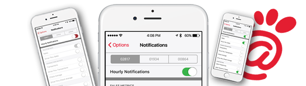
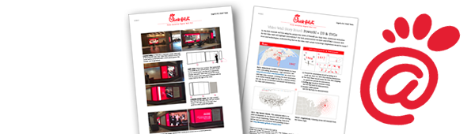
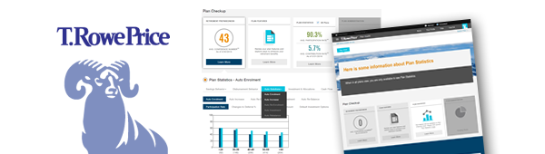
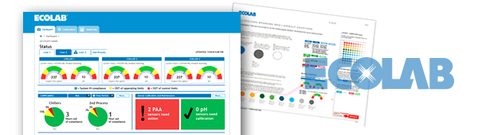

Consultant
ten minute drill
Myron Netterlund
UX/UI Designer/FrntEnd Developer
Digital Transformation Practice
Created by Myron Netterlund / @netterlund
Keyboard Shortcuts
| Full Screen | F |
| Next Slide | Space bar |
| Slide Notes | S |
| Thumbnail View | Esc |
View online at http://mvnmin.github.io/sogeti
Note: Some slides move down instead of to the side,
so use the space bar to advance slides.
Who's Talking
- Senior Consultant
- Front End Web Design | Backend Friendly
- User Experience
- User Interface Design
Oral Roberts University
Bachelors of Science, ART, duel minor:
Graphic Design & Telecommunications
Goal(s)
Forwarding my DT Practice in Minneapolis,
utilizing my user experience & UI skillset(s)
to build the most trusted fulfillment team
Deepen my coding/development skills
Broaden client partnerships & working team unity
Engagements
Ameritas | Lincoln, NE
ROLE: UX/UI Designer | Web Developer
HTML5 • Bootstrap • CSS media queries • jQuery • continuous integration • YouTube • Github • HubSpot • Eclipse IDE
IBM - WCM Integration, First Sogeti UX experience
MidAmerican Energy | Des Moines, IA
ROLE: Digital Strategist | UX/UI Consultant

C-Suite Engagement that led to winning a year-long development contract • InDesign content presentation & PDF document deliverable
Non-bias strategy consultation that led to
our being chosen as developers of choice
Best Buy | Richfield, MN
ROLE: Digital Strategist | Business Analyst | Vendor Liaison
'Senior Level' consultants requested for this technology review of online Chat providers • "Hit it outta the park!", said our sponsor • Conducted phone, 1:1 & onsite interviews
Demonstrated Consultant Flexibility
Chick-fil-A | Atlanta, GA
ROLE: UI Designer | Mobile App
Hi-fidelity wireframes for client approval & offshore standards • reusable template created for Sogeti wireframes • #Slack • Agile
Hi-Fidelity Mobile Wireframes & Agile workflow
Android & iOS
Chick-fil-A | 2.0 remote
ROLE: Proof of Concept | Video Wall
Power BI explored for use in data visualization of Chick-fil-A's video wall • Concept documents & remote agile-like development with remote team-members
Data Visualization experience: PowerBI, D3.js, & SVGs
T Rowe Price | Baltimore, MD
ROLE: UX/UI Designer | Health Plan
Client request of UX for Health Plan web application build-out • Branded Style Guide created for MicroStrategy conformance •
Introduction to MicroStrategy & HighCharts.js
Designing for MicroStrategy chart specifications
Ecolab | Eagan, MN
ROLE: UI Designer | Dashboard Designs
Data visualization dashboard designs & client UX • Style guide for charts, "Chicken Chiller" gauge
Pure JavaScript development on ECL's "Chicken Chiller" gauge
Used HighCharts.js for traditional data charting
Strengths And Skills
• Presentation (obviously)
• People skills (good in the conference room)
• Flexible/ Versitile
In-Demand Skills
• JS Frameworks: Angular, Polymer
• Mobile Dev/UI: Xamarin
I love to learn, I expect to be challenged.
What I'm Looking For
• The right client-match for my skill-set
• Market profitability / Team Leverage
• Flexible / Versatile | True Agility
Career & Self Development
• Front End Professional & Back End Friendly
Thanks!
Contact info
- Portfolio: netterlund.dunked.com
- Twitter: @netterlund
- GitHub for slides: mvnmin.github.io/sogeti
- Email: myron.netterlund@gmail.com
Credits
- Slide framework from Reveal JS
- Microsoft is very interesting again -- very, by Jason Calicanus. Linkedin